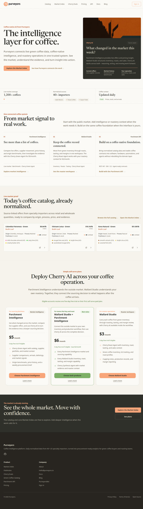
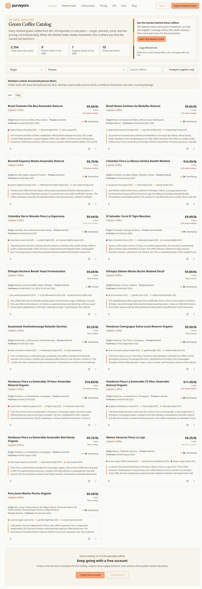
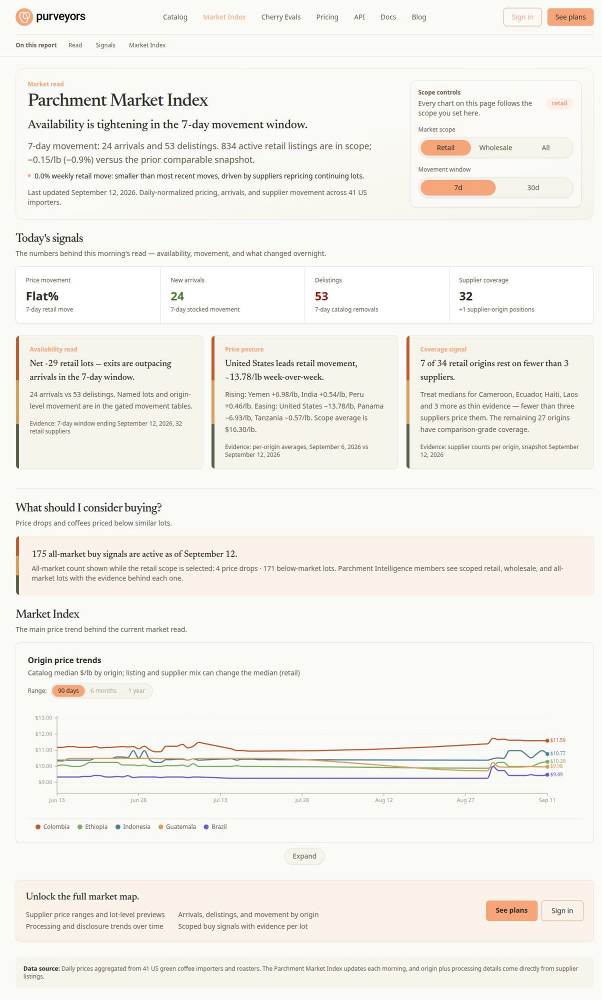
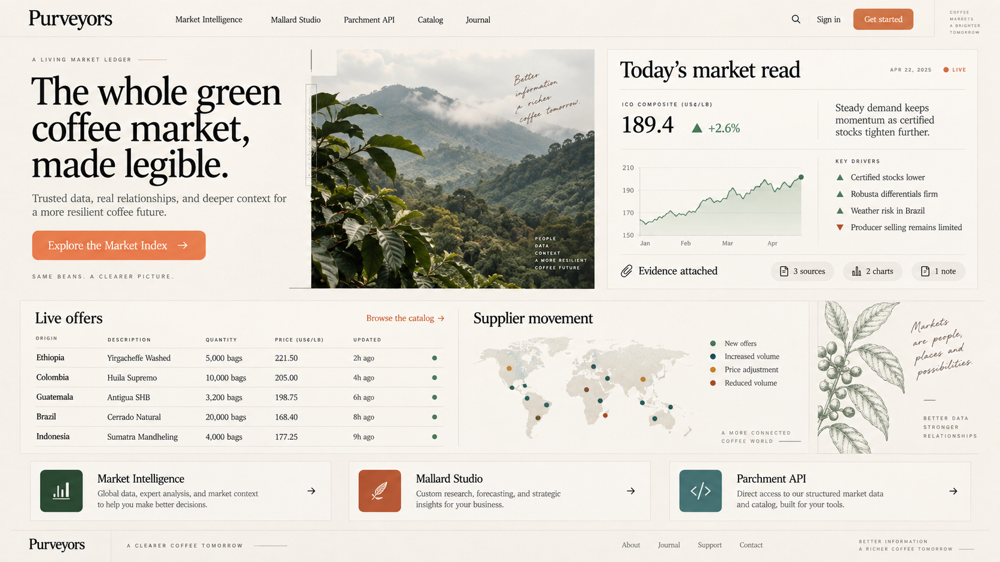
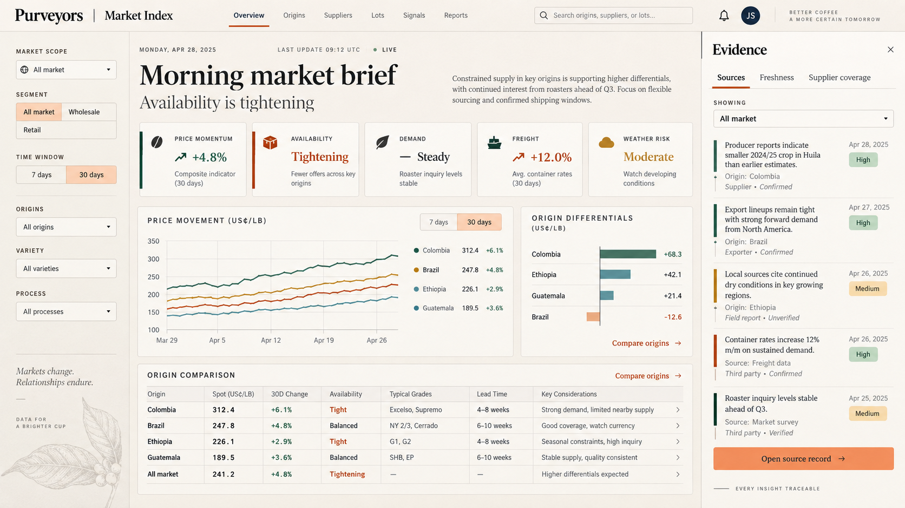
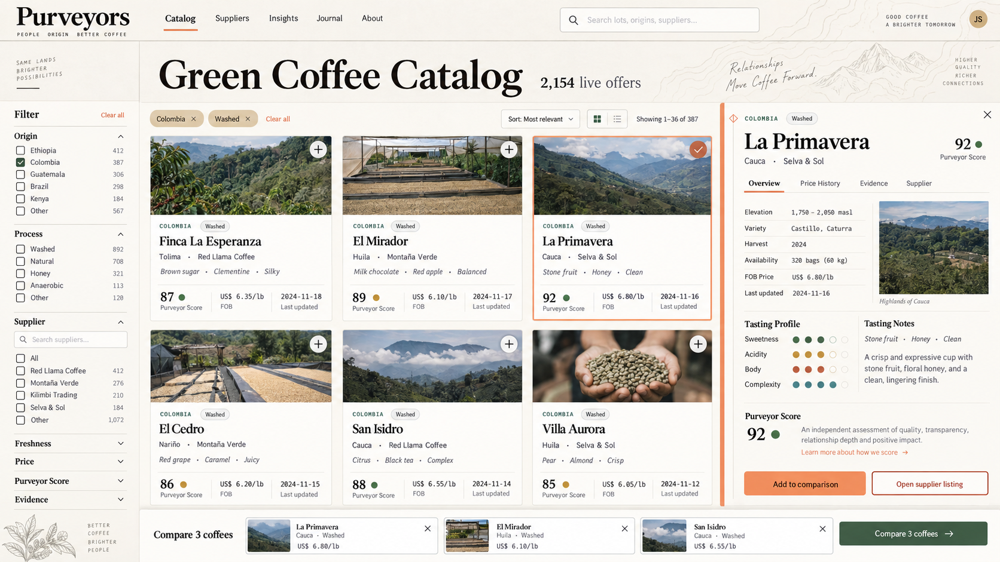
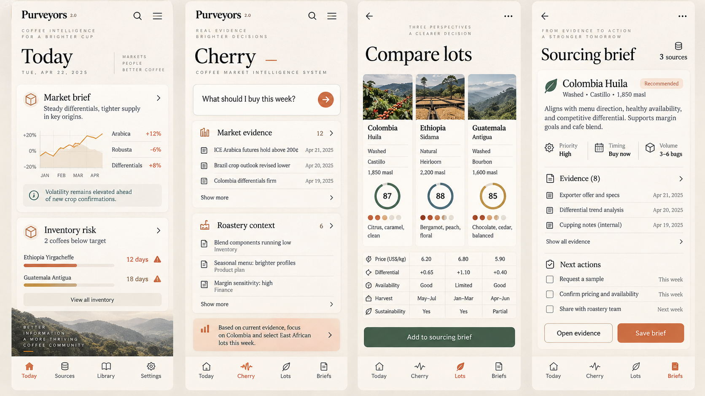

The living ledger of the green coffee market.
A professional brand, design-system, and UI/UX direction built from the current field-journal foundation.
Warm canvas, Newsreader headlines, calm density, peach action color, earth-tone chart system, and the “field journal” idea are all sound.
Turn source records, freshness, confidence, lot identity, and movement into visible UI signatures, not supporting metadata.
Every key surface should move from market signal to evidence to comparison to action, without forcing users through product silos.
Brand 2.0 = a field journal that behaves like a market instrument.
Recommended north starLive capture from purveyors.io, September 12, 2026.

The redesign work from July is visible. Brand 2.0 should compound it, not restart it.


Borders and rectangles do most of the structure work, so distinct products can feel visually interchangeable.
Provenance exists, but it is not yet the strongest visual signature of the experience.
Catalog and index support reading well, but comparison and next-step affordances are understated.
Brand imagery is coherent but sparse. Real field texture has not become a reusable system.
Origin, process, harvest, offer, inventory, and roast context.
Normalize, timestamp, attribute, score completeness, expose confidence.
Movement, supplier change, relative value, and operational fit.
Compare, save, share, source, roast, or automate with traceability intact.
The brand promise is legibility under uncertainty.
Catalog, suppliers, prices, movement, provenance, and API contracts.
Inventory, roasts, tasting, sales, margin, and team context.
Role-aware reasoning and actions grounded in the contexts the user actually has.
Preserve product names for orientation, but let shared workflows cross product boundaries. A sourcing brief may combine Parchment evidence, Mallard constraints, and Cherry interpretation without making the user understand the architecture first.
Orange remains the brand/action accent. Cool colors earn their place through data and context.
Newsreader carries the read.
System sans carries the work.
Serif is for editorial statements, market reads, and chapter titles. Sans is for controls, tables, charts, and operational density. Monospace is reserved for time, price, IDs, and machine contracts.
A thin vertical line that encodes source type or confidence and always leads to the source record.
Origin · region · process · harvest · supplier, in a fixed order that trains scanning across the product.
Timestamp + human interval + source heartbeat. “Updated 2h ago” is proof, not decoration.
A restrained line, seam, or ledger tick for movement. It replaces decorative graphs and blobs.
A reusable artifact with claim, supporting evidence, confidence, constraints, and next actions.
A quiet mapping motif for chapter boundaries and empty regions, never behind dense data or copy.
This sequence should be visible in every important workflow, even when the steps collapse into one screen.
Exploratory AI-generated UI. Directional composition, not pixel specification.

The homepage becomes a composed editorial spread where live offers, supplier movement, and evidence are the visual centerpiece.
A shorter hero promise with one market-led primary action.
Use current data so the brand demonstrates intelligence immediately.
Sources, dates, and coverage become a repeatable visual signature.
Parchment, Mallard, and API remain clear without dominating the story.
“The whole green coffee market, made legible.”
Recommended as campaign / exploration language. Validate against product positioning before replacing the current homepage H1.
The evidence drawer is the key Brand 2.0 interaction, not ornamental chart styling.

Photography is optional and must be source-linked. The interaction model is the real recommendation.

Name, supplier, origin, process, freshness, baseline price, tasting cue, Purveyor Score.
Process disclosure, source record, price history, availability, confidence, comparison action.
Three to four lots, fixed attributes, visible constraints, no full-page context switch.
Save, share, request sample, confirm availability, or analyze in Cherry.
Four states: Today, evidence context, lot comparison, saved sourcing brief.

Homepage hero crops, enterprise moments, About, research/editorial covers, empty-state chapter art.
Generic farm stock, roasted-bean macro photography, latte art, rustic café signals, or art behind tables and charts.
State changes and hover feedback. No elastic bounce.
Detail and evidence panels slide from the contextual edge.
Charts interpolate only when scope or window changes.
Use fades or immediate state changes; preserve all meaning.
A user should never wonder whether motion was decoration, loading, or evidence changing.
2px visible ring, accent or high-contrast ink, with offset on warm surfaces.
Label the object being refreshed: “Updating supplier movement,” not “Loading.”
Confirm save/share actions inline and preserve the artifact’s state.
Primary CTA per anonymous view.
Lots in a useful comparison set.
Decision claims traceable to evidence or clearly labeled inference.
Evidence rail, identity strip, freshness clock, decision brief anatomy, and token rules in a component inventory.
Clickable Market Index evidence drawer and catalog compare tray using live, truthful data.
Test with professional buyers and roasters on scan speed, confidence, and action completion.
Homepage, Cherry, imagery library, motion, docs, and brand governance after the interaction primitives prove useful.
Market Index evidence drawer. It is high leverage, visibly differentiated, and exercises the brand promise without requiring a site-wide redesign.
Faster source inspection · more comparison starts · more saved briefs · fewer navigation hops · stronger confidence in data recency.
Recommended as the internal design north star, not necessarily the public tagline.
Recommended for Market Index, catalog details, and Cherry artifacts.
Only when coverage and rights are reliable; never make it a required card field.
Recommended as a shared pattern across catalog and Cherry workflows.
Prototype one hero and one editorial cover first, then assess reuse.
Copy, metrics, photography, and field availability must be verified before implementation.
Recommended next move: prototype the Market Index evidence drawer and catalog comparison tray before commissioning a full visual rollout.